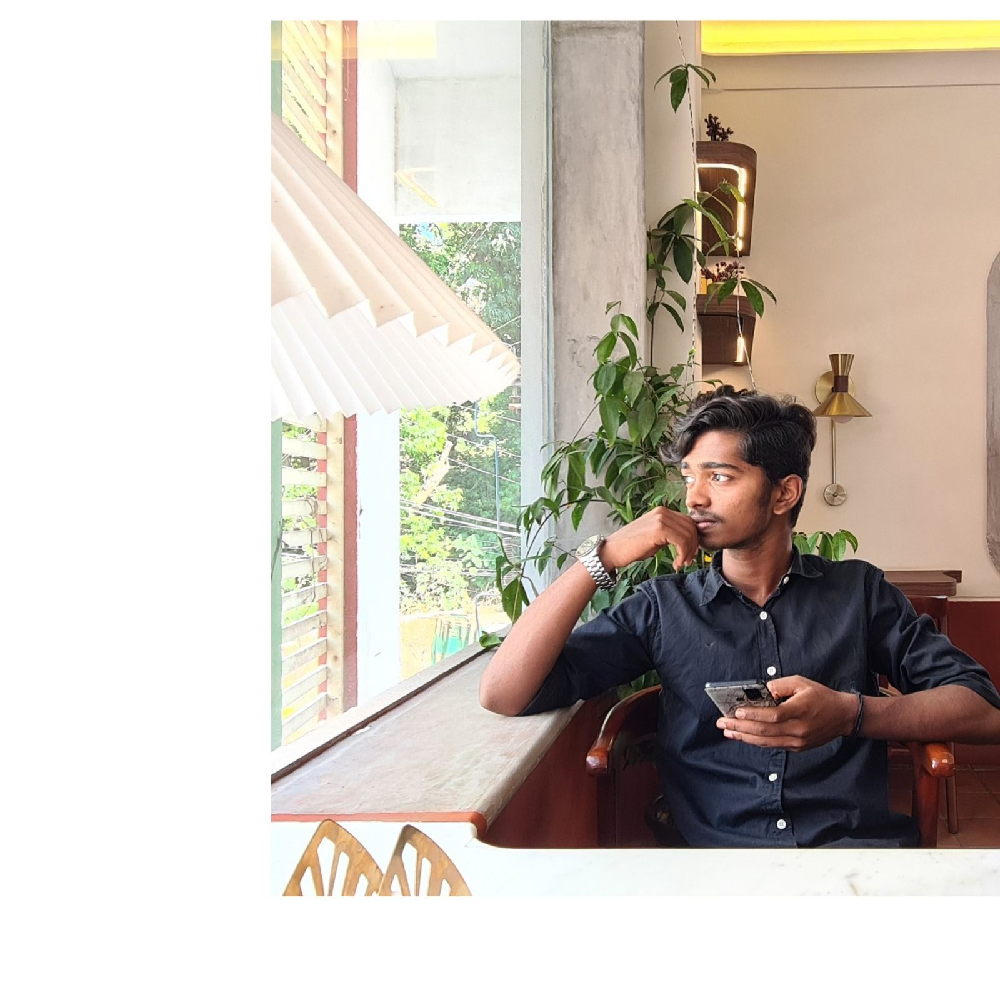
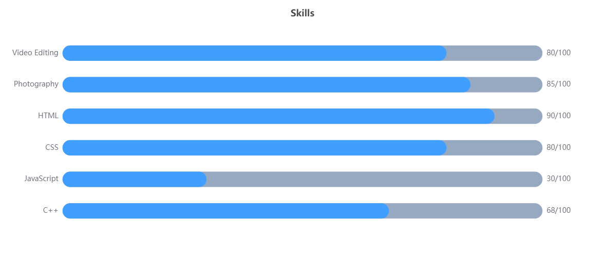

Samarth S Alva
Student at YIASCM X Kalvium

If you want to shine like a sun, first burn like a sun.
-Dr.APJ Abdul Kalam
Made with ❤️ by Samarth.
Samarth S Alva
I am a Student.
About
I am Samarth S Alva. Now student at Yenepoya University presuing my Bachelors of Computer Applications Hons Software Product Engineering.
Description and Dreams
I finished my pre-university studies in commerce stream with computer background.I had a great intrest in working of computer so i took studying about computer as my main passion and trying to build a career in that.
- City: Mangalore
- Age: 17
- Degree: BCA Hons Software Product Engineering
- Email: samarth.s@kalvium.community
Following steps of great Software Developers, My dream is to become a one of the best Software Developer. As I even have little intrest in business, I have a dream of building an IT company of mine own and built a big empire in this corporate world. There is this quote from late president Dr. APJ Abdul Kalam:-"It does not matter how large or small your sphere of activity is, what counts finally is the commitment that you bring to the job that has been ordained for you in this life."Following on the guidence of my mentors and role models one day i am gonna accomplish my goal and become succesfull.
My
Enthusiasm
I am bound to do some or the other work all the time. I dont like to scroll on social media and waste my time rather i would go for a drive or go out to play cricket with my friends,play badminton, or may be plan for a treck on weekends or whenever I have holiday.
Skills
My skills are kind of differet from others as i have different taste or a different point of view on this world my skills are not really professional and are like drfiting cars, performing stunts in bikes, without getting wrecked. More than defining these as unprofessional we can say like "ILLEGAL" i think. So talking about my professional skills i have few of them like communication skills, I am good at convincing people sometimes then i have leart few programming languages like C++,HTML,JavaScript and CSS.I have good knowledge of video and photo editing and even photoghraphy and videography.
